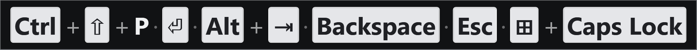
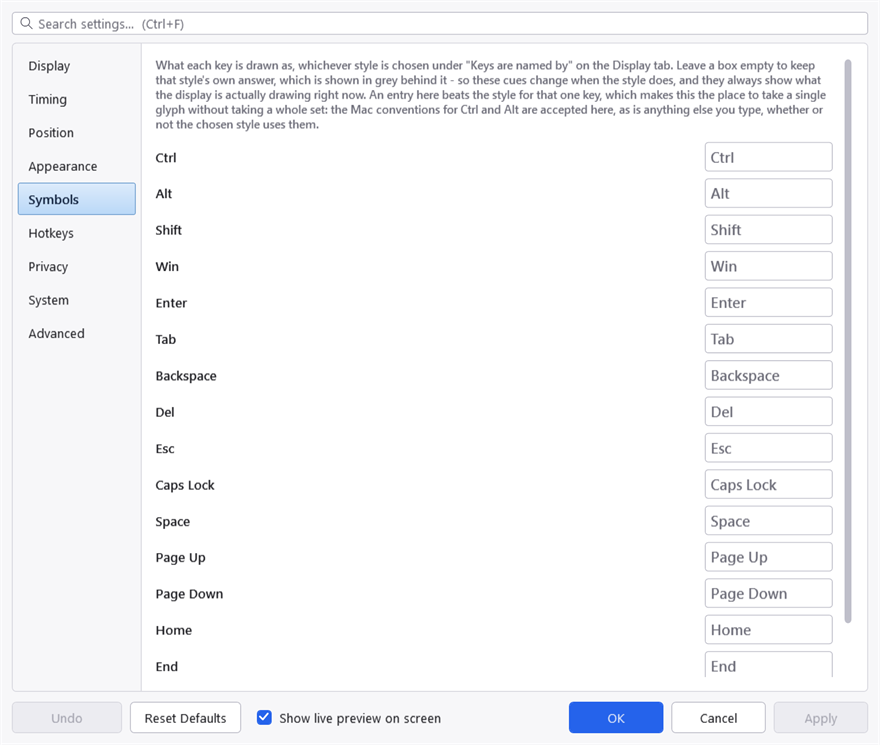

Key names and symbols
Names come from your keyboard, not from a table
What a key is called is worked out at the moment you press it, by asking the active keyboard layout what that key produces — not by looking the key up in a list.
That matters if you use anything other than a US layout. A table mapping a key to @ is right on one layout and wrong on the hundred-odd others Windows ships; asking the layout is right on all of them, including the dead-key and AltGr combinations no table would cover.
Consequences worth knowing:
- The layout consulted is the one belonging to the window you are typing into, not this application's. On a machine with two layouts and per-window switching, that is the difference between showing what was typed and what would have been typed somewhere else.
- AltGr combinations show the character, not the mechanism. On a layout where AltGr+E produces
€, the display says€rather thanCtrl + Alt + E. - Observing a dead key does not consume it. Pressing
'thenestill gives youé— running this application does not break accented typing.
Keys that produce no character at all — Enter, the function keys, the arrows — do come from a table, because there is nothing to ask the layout about. A key in neither category falls back to its Windows name with the Oem prefix stripped, so an unusual key on a gaming keyboard shows something rather than nothing.
Symbols
Keys are named by, on the Display tab, chooses between three answers. All three are offered because the middle one necessarily mixes glyphs and words, and whether that mixture is right depends on who is looking at the screen.
Words is the default: Shift, Ctrl, Esc, Enter. This is how a shortcut is written down everywhere else — in a menu, in documentation, or when you read it out to somebody — and nothing in it is ambiguous to anyone.
Symbols printed on a keyboard uses the four glyphs a Windows keyboard puts on its own keycaps: Shift's arrow ⇧, Tab's arrow ⇥, Enter's return ⏎, and the Windows square ⊞. Every other key keeps its word, because on a real keyboard Ctrl, Alt and Esc are spelled out too. So a chord can come out as a mixture — ⇧ beside Ctrl — and that is the honest cost of only using glyphs you have a legend for on the keyboard in front of you. If it bothers you, the other two settings are both consistent.
Symbols for every key is uniform, and the cost is worth stating plainly rather than discovering:
- Backspace
⌫and Delete⌦draw as a box with a cross through it, which reads as a missing character rather than as a key. - Esc
⎋reads as a prohibition sign — "not allowed" rather than "escape". - Space
␣reads as very little at all. - Ctrl
⌃and Alt⌥are the Mac keyboard's glyphs. No Windows keyboard, menu or document writes a shortcut that way. - None of them has a bold weight in Segoe UI, so they stay hairline while every other token on the panel is bold.
It is offered anyway, for two reasons: a setting that could only ever half-apply was the worse problem, and for a personal display — where the glyphs are learned once and then read faster than words — every objection above is about an audience who is not there.

Symbols printed on a keyboard. Shift's arrow reads immediately; Ctrl beside it is a word, which is the mixture this style is.
Keys with no established glyph keep their word under every style. There is no symbol for F5, Print Screen or Scroll Lock.
Choosing your own
The Symbols tab lets you replace any key's symbol individually, which is what keeps the choice from being all-or-nothing: you can have ^ for Ctrl while leaving everything else as words, or take the full glyph set and put Backspace back as a word.
Each row shows what that key is currently drawn as, in grey behind an empty box — so the cues follow the style you picked on the Display tab and always show what the display is really doing. Type over a box to override it; clear it to go back. Any text is allowed, not only a single character.

The Symbols tab. The grey text behind each empty box is what that key is drawn as today, so an empty row still tells you what you would be replacing.
The keys you can override are:
Ctrl, Alt, Shift, Win, Enter, Tab, Backspace, Del, Esc, Caps Lock, Space, Page Up, Page Down, Home, End.
An override beats the style for that one key, whichever style is chosen — with one exception. Words means words: an override is a symbol, and applying it there would make the style do nothing for any key you had customised.
Key caps
Named keys are drawn as key caps: a light, padded, rounded box with dark text. Typed characters are drawn as plain text.
That is the single thing that makes a line readable at a glance rather than a wall of words, and it is why there are two foreground colours rather than one. See How it looks.
Project on GitHub · MIT licence ·
This manual is generated from docs/manual.